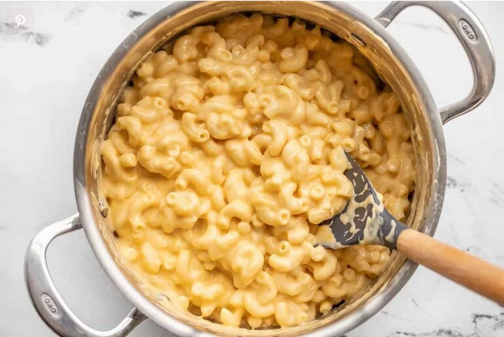

Mac and Cheese

Description
This is how to make a simple mac and cheese that's under $10!
Ingredients
- Macaroni
- Butter
- Flour
- Onion Powder
- Whole Milk
- Hot Sauce
- Salt
- Block Cheddar, Shredded
Steps
- Cook the macaroni according to the package directions (boil for 7-8 minutes, or until tender). Drain the macaroni in a colander.
- Place the butter, flour, and onion powder in a medium pot. Whisk and heat over medium until the butter is melted and the mixture begins to bubble. Once bubbling, continue to whisk and cook for one minute.
- After cooking the butter and flour roux, whisk in the milk. Continue to cook and whisk over medium heat until the milk begins to gently simmer, at which point it will thicken to the consistency of heavy cream or gravy.
- Turn the burner off. Season the white sauce with the salt and hot sauce.
- Begin to add the shredded cheddar, one handful at a time, whisking it in until completely melted before adding more. Continue until all of the cheese has been melted into the sauce. If the sauce becomes too cold to melt the cheese, place it back over low heat only briefly to continue melting the cheese. Overheating the sauce can cause it to break and become grainy.
- Add the cooked and drained pasta to the pot with the cheese sauce and stir to combine. Serve the mac and cheese hot and enjoy!